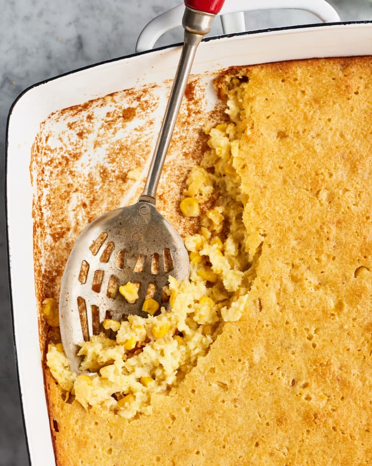

Home
Corn Pudding

Description
The classic Jiffy corn casserole recipe first appeared on the back of the little blue Jiffy box, but curious home cooks have since riffed on the idea. Some versions call for heavy cream, while others call for more eggs for a soufflé-like effect. There are even some packed with cheese! This six-ingredient Jiffy Corn Casserole recipe is the one to remember.
Ingredients
- 1 Box Jiffy corn nuffin mix
- 1/2 Cup of butter, melted
- 1 Can of whole kernel corn, drained
- 1 can of cream style corn
- 8 oz Sour cream
Steps
- Preheat oven to 350 degrees/li>
- In a large mixing bowl, add muffin mix and melted butter
- Add in both cans of corn
- Add in the sour cream
- Mix well to combine
- Pour into a greased 9" x 9" baking dish
- Place in to a preheated oven and bake for approx. 50 minutes
- Remove from oven and allow to cool for 10 minutes before serving